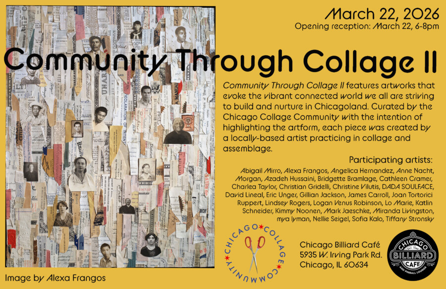

Community Through Collage II
Community Through Collage II features artworks that evoke the vibrant connected world we all are striving to build and nurture in Chicagoland. Curated by the Chicago Collage Community with the intention of highlighting the artform, each piece was created by a locally-based artist practicing in collage and assemblage.
The creative genre of collage and assemblage can be described as a process of disparate fragments coming together to form stories, explain histories, depict human struggles and injustices, and enrich the places in which we exist and commune together. It is this shared experience as humans, shaped by different cultures, customs, places, and relationships that likens us all to collages.
Featured Artists:
Abigail Mirro, Alexa Frangos, Angelica Hernandez, Anne Nacht Morgan, Azadeh Hussaini, Bridgette Bramlage, Cathleen Cramer, Charlea Taylor, Christian Gridelli, Christine Vilutis, DADA SOULFACE, David Lineal, Eric Unger, Gillian Jackson, James Carroll, Joan Tortorici Ruppert, Lindsey Rogers, Logan Venus Robinson, Lo Marie, Katlin Schneider, Kimmy Noonen, Mark Jaeschke, Miranda Livingston, mya lyman, Nellie Seigel, Sofia Kalo, Tiffany Stronsky